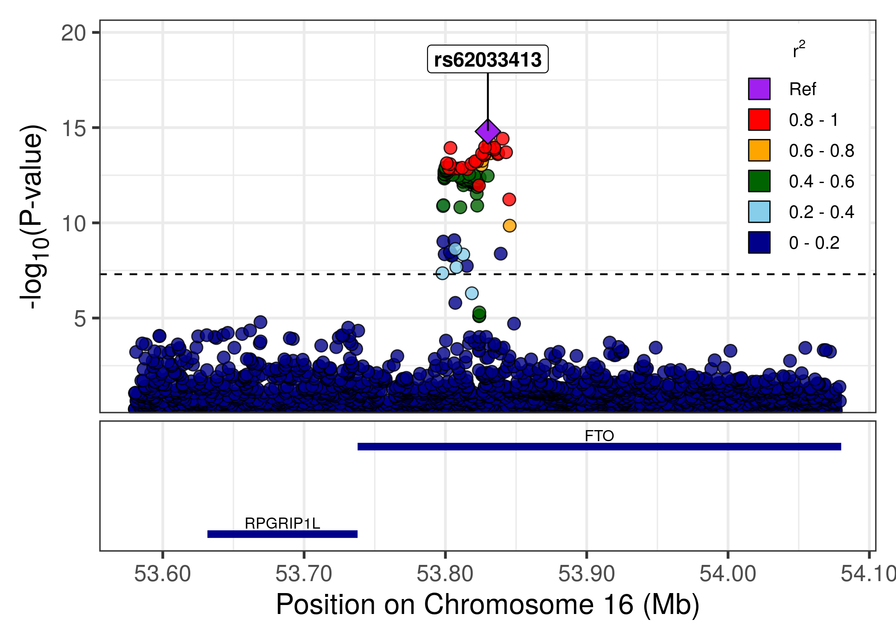

The goal of locusplotr is to allow users to integrate genome-wide association study results with linkage disequilibrium data to create regional association plots surrounding a genomic locus of interest. The gg_locusplot function allows the user to provide GWAS summary statistics for a region of interest and a reference/sentinel/lead variant within that region, and will return a ggplot object with a regional association plot. In the background, this package uses a helper function named ld_extract_locuszoom to query the University of Michigan LocusZoom API (https://portaldev.sph.umich.edu/) to obtain linkage disequilibrium data for a genetic variant and genomic region of interest (allowing the user to specify genome build and genetic ancestry).
Installation
You can install locusplotr from GitHub:
# install.packages("devtools")
devtools::install_github("mglev1n/locusplotr")Usage
Start with a dataframe containing genome wide association study summary statistics at a locus of interest
library(locusplotr)
fto_locus_df
#> # A tibble: 19,119 × 9
#> chromosome position rsid effect_allele other_allele eaf effect std_err
#> <dbl> <dbl> <chr> <chr> <chr> <dbl> <dbl> <dbl>
#> 1 16 53532568 rs1503… A C 0.996 -0.279 0.196
#> 2 16 54016452 rs1722… A G 0.909 -0.0269 0.0122
#> 3 16 53710931 rs1454… A G 0.982 -0.0212 0.104
#> 4 16 54069480 rs3717… T C 0.001 -1.38 1.04
#> 5 16 53371872 rs5337… T C 0.0019 0.0681 0.508
#> 6 16 53838423 rs1162… T C 0.0221 0.0116 0.0985
#> 7 16 53610642 rs1131… T C 0.149 0.0364 0.0099
#> 8 16 53494581 rs5350… A G 0.997 0.264 0.170
#> 9 16 54248221 rs5576… A T 0.0476 -0.0527 0.0709
#> 10 16 53549981 <NA> A G 0.0004 1.50 0.518
#> # ℹ 19,109 more rows
#> # ℹ 1 more variable: p_value <dbl>Use the gg_locusplot function to create a regional association plot. This calls the ld_extract_locuszoom function in the background to fetch linkage disequilibrium data from the University of Michigan LocusZoom API (https://portaldev.sph.umich.edu/).
library(tidyverse)
fto_locus_df %>%
gg_locusplot(
lead_snp = "rs62033413",
rsid = rsid,
chrom = chromosome,
pos = position,
ref = effect_allele,
alt = other_allele,
p_value = p_value
)
Use the plot_genes argument to include a plot of genes within the region beneath the main regional association plot.
gg_locusplot(
df = fto_locus_df,
lead_snp = "rs62033413",
rsid = rsid,
chrom = chromosome,
pos = position,
ref = effect_allele,
alt = other_allele,
p_value = p_value,
plot_genes = TRUE
) Additional arguments allow the user to specify the genome build (GRCh37, GRCH38), population (Eg. ALL, AMR, AFR, EUR, EAS, etc.), plot title/subtitle, and directory to save the regional association plot as a .pdf.
The ld_extract_locuszoom function, called in the background by gg_locusplot, can also be used to retrieve linkage disequilibrium data for a genetic variant and genomic region of interest. The user may again specify genome build, population, and the specific linkage disequilibrium metric (Eg. r, rsquare, cov)
ld_extract_locuszoom(chrom = 16, pos = 53830055, ref = "C", alt = "G", start = 53830055 - 5e5, stop = 53830055 + 5e5, genome_build = "GRCh37", population = "ALL", metric = "rsquare")
#> # A tibble: 28,455 × 7
#> variant1 chromosome1 position1 variant2 chromosome2 position2 correlation
#> <chr> <dbl> <int> <chr> <dbl> <int> <dbl>
#> 1 16:53830055… 16 53830055 16:5333… 16 53330083 0.000613
#> 2 16:53830055… 16 53830055 16:5333… 16 53330091 0.00328
#> 3 16:53830055… 16 53830055 16:5333… 16 53330128 0.0000874
#> 4 16:53830055… 16 53830055 16:5333… 16 53330136 0.0000592
#> 5 16:53830055… 16 53830055 16:5333… 16 53330148 0.00364
#> 6 16:53830055… 16 53830055 16:5333… 16 53330184 0.000674
#> 7 16:53830055… 16 53830055 16:5333… 16 53330263 0.000118
#> 8 16:53830055… 16 53830055 16:5333… 16 53330336 0.0000592
#> 9 16:53830055… 16 53830055 16:5333… 16 53330401 0.000618
#> 10 16:53830055… 16 53830055 16:5333… 16 53330445 0.00202
#> # ℹ 28,445 more rows